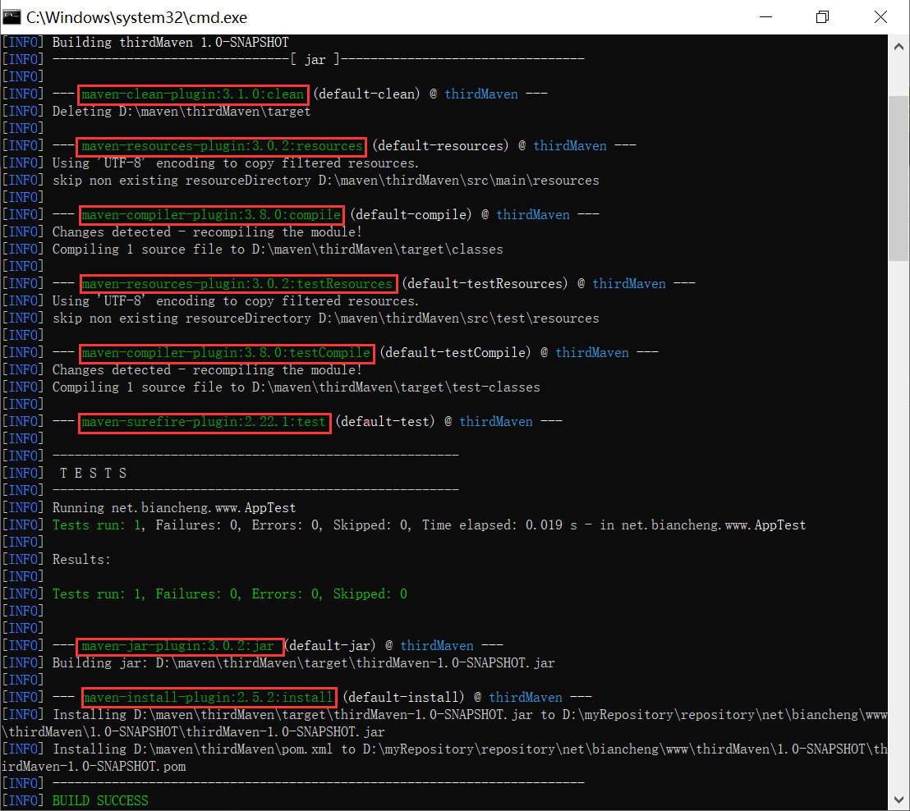

Maven插件（plugin）
Maven 实际上是一个依赖插件执行的框架，它执行的每个任务实际上都由插件完成的。Maven 的核心发布包中并不包含任何 Maven 插件，它们以独立构件的形式存在， 只有在 Maven 需要使用某个插件时，才会去仓库中下载。
例如，maven-compiler-plugin 插件的 compile 目标的通用写法如下。
例如，调用 maven-compiler-plugin 插件的 compile 目标，命令如下。
上表中，default 生命周期中只列出了绑定了插件目标的阶段，它还有很多其他的阶段，但这些阶段默认没有绑定任何插件目标，因此它们也没有任何实际的行为。
我们可以直接在执行 Maven 命令看到该构建过程包含了哪些插件目标。例如，在 Maven 项目中执行 mvn clean install 命令，能看到如下输出，图中标记的部分就是执行此命令时所调用的插件目标。
例如，我们想要在 clean 生命周期的 clean 阶段中显示自定义文本信息，则只需要在项目的 POM 中 ，通过 build 元素的子元素 plugins，将 maven-antrun-plugin:run 目标绑定到 clean 阶段上，并使用该插件输出自定义文本信息即可。
以上配置中除了插件的坐标信息之外，还通过 executions 元素定义了一些执行配置。executions 下的每一个 executin 子元素都可以用来配置执行一个任务。
execution 下各个元素含义如下：
执行命令 mvn clean ，结果如下。
如下表所示，Maven 提供了如下 2 种类型的插件。
| 插件类型 | 描述 |
|---|---|
| Build plugins | 在项目构建过程中执行，在 pom.xml 中的 build 元素中配置 |
| Reporting plugins | 在网站生成过程中执行，在 pom.xml 中的 reporting 元素中配置 |
插件目标
对于 Maven 插件而言，为了提高代码的复用性，通常一个 Maven 插件能够实现多个功能，每一个功能都是一个插件目标，即 Maven 插件是插件目标的集合。我们可以把插件理解为一个类，而插件目标是类中的方法，调用插件目标就能实现对应的功能。通用写法
插件目标的通用写法如下。[插件名]:[插件目标名]
例如，maven-compiler-plugin 插件的 compile 目标的通用写法如下。
maven-compiler-plugin:compile
执行插件目标
使用 Maven 命令执行插件的目标，语法如下。mvn [插件名]:[目标名]
例如，调用 maven-compiler-plugin 插件的 compile 目标，命令如下。
mvn compiler:compile
插件绑定
为了完成某个具体的构建任务，Maven 生命周期的阶段需要和 Maven 插件的目标相互绑定。例如，代码编译任务对应了default 生命周期的 compile 阶段，而 maven-compiler-plugin 插件的 compile 目标能够完成这个任务，因此将它们进行绑定就能达到代码编译的目的。
内置绑定
Maven 默认为一些核心的生命周期阶段绑定了插件目标，当用户调用这些阶段时，对应的插件目标就会自动执行相应的任务。| 生命周期 | 阶段 | 插件目标 | 执行的任务 |
|---|---|---|---|
| clean | pre-clean | ||
| clean | maven-clean-plugin:clean | 清理 Maven 的输出目录 | |
| post-clean | |||
| site | pre-site | ||
| site | maven-site-plugin:site | 生成项目站点 | |
| post-site | |||
| site-deploy | maven-site-plugin:deploy | 部署项目站点 | |
| default | process-resources | maven-resources-plugin:resources | 复制资源文件到输出目录 |
| compile | maven-compiler-plugin:compile | 编译代码到输出目录 | |
| process-test-resources | maven-resources-plugin:testResources | 复制测试资源文件到测试输出目录 | |
| test-compile | maven-compiler-plugin:testCompile | 编译测试代码到测试输出目录 | |
| test | maven-surefire-plugin:test | 执行测试用例 | |
| package | maven-jar-plugin:jar/maven-jar-plugin:war | 创建项目 jar/war 包 | |
| install | maven-install-plugin:install | 将项目输出的包文件安装到本地仓库 | |
| deploy | maven-deploy-plugin:deploy | 将项目输出的包文件部署到到远程仓库 |
上表中，default 生命周期中只列出了绑定了插件目标的阶段，它还有很多其他的阶段，但这些阶段默认没有绑定任何插件目标，因此它们也没有任何实际的行为。
我们可以直接在执行 Maven 命令看到该构建过程包含了哪些插件目标。例如，在 Maven 项目中执行 mvn clean install 命令，能看到如下输出，图中标记的部分就是执行此命令时所调用的插件目标。

图1：Maven 构建过程中执行插件目标
自定义绑定
除了内置绑定之外，用户也可以自己选择将某个插件目标绑定到 Maven 生命周期的某个阶段上，这种绑定方式就是自定义绑定。自定义绑定能够让 Maven 在构建过程中执行更多更丰富的任务。例如，我们想要在 clean 生命周期的 clean 阶段中显示自定义文本信息，则只需要在项目的 POM 中 ，通过 build 元素的子元素 plugins，将 maven-antrun-plugin:run 目标绑定到 clean 阶段上，并使用该插件输出自定义文本信息即可。
<project>
...
<build>
<plugins>
<!-- 绑定插件 maven-antrun-plugin -->
<plugin>
<groupId>org.apache.maven.plugins</groupId>
<artifactId>maven-antrun-plugin</artifactId>
<version>1.8</version>
<executions>
<execution>
<!--自定义 id -->
<id>www.biancheng.net clean</id>
<!--插件目标绑定的构建阶段 -->
<phase>clean</phase>
<!--插件目标 -->
<goals>
<goal>run</goal>
</goals>
<!--配置 -->
<configuration>
<!-- 执行的任务 -->
<tasks>
<!--自定义文本信息 -->
<echo>清理阶段，编程帮 欢迎您的到来，网址：www.biancheng.net</echo>
</tasks>
</configuration>
</execution>
</executions>
</plugin>
</plugins>
</build>
...
</project>
以上配置中除了插件的坐标信息之外，还通过 executions 元素定义了一些执行配置。executions 下的每一个 executin 子元素都可以用来配置执行一个任务。
execution 下各个元素含义如下：
- id：任务的唯一标识。
- phase：插件目标需要绑定的生命周期阶段。
- goals：用于指定一组插件目标，其子元素 goal 用于指定一个插件目标。
- configuration：该任务的配置，其子元素 tasks 用于指定该插件目标执行的任务。
执行命令 mvn clean ，结果如下。
[INFO] Scanning for projects...
[INFO]
[INFO] ------------------< net.biancheng.www:helloIdeaMaven >------------------
[INFO] Building helloIdeaMaven 2.6-SNAPSHOT
[INFO] --------------------------------[ jar ]---------------------------------
[INFO]
[INFO] --- maven-clean-plugin:3.1.0:clean (default-clean) @ helloIdeaMaven ---
[INFO] Deleting D:\eclipse workSpace 3\helloIdeaMaven\target
[INFO]
[INFO] --- maven-antrun-plugin:1.8:run (www.biancheng.net clean) @ helloIdeaMaven ---
[WARNING] Parameter tasks is deprecated, use target instead
[INFO] Executing tasks
main:
[echo] 清理阶段，编程帮 欢迎您的到来，网址：www.biancheng.net
[INFO] Executed tasks
[INFO] ------------------------------------------------------------------------
[INFO] BUILD SUCCESS
[INFO] ------------------------------------------------------------------------
[INFO] Total time: 0.753 s
[INFO] Finished at: 2021-04-08T10:22:49+08:00
[INFO] ------------------------------------------------------------------------
当插件目标绑定到生命周期的不同阶段时，其执行顺序由生命周期阶段的先后顺序决定。如果多个目标绑定到同一个生命周期阶段，其执行顺序与插件声明顺序一致，先声明的先执行，后声明的后执行。
关注公众号「站长严长生」，在手机上阅读所有教程，随时随地都能学习。内含一款搜索神器，免费下载全网书籍和视频。

微信扫码关注公众号